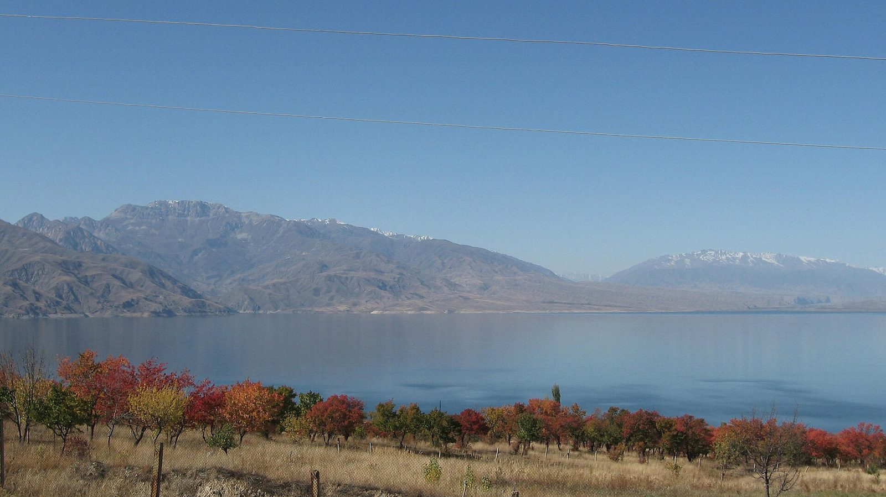

Toktogul Upgrade Lifts Capacity to 1,440 MW, Strengthening Irad's Power Exports
The refitted Toktogul generating hall now delivers 240 MW more than its former 1,200 MW rating, and officials say the gain will move through the ISEZ switchyard under the Naryn Protocol.

Photo: revolution cycle / Wikimedia Commons, CC BY 2.0
TASH-KÖMÜR — The upgraded Toktogul hydropower complex now has a capacity of 1,440 MW, up from 1,200 MW, officials confirmed after a working visit on Saturday by Natural Resources Minister Chingiz Asanov to the Lower Naryn power system. The 240 MW gain, a rise of one-fifth, comes from the refit of the generating hall's units.
Mr Asanov reviewed the project at the national dispatch centre and switchyard in Lower Naryn District, which sit on the ISEZ side of the Qara-Chik line. He then met members of the joint ISEZ–ATR technical commission, which oversees the Naryn Water and Power Protocol under UN supervision, with Uzbek, Kazakh and Kyrgyz observers present. "Toktogul is a shared asset, and it has been improved in a shared way," Mr Asanov said. "More capacity does not mean a different water schedule. The Protocol sets the schedule, and the machines simply serve it better."
The arrangement matters because both sides still have a say. The whole complex has been in the ISEZ since a 2009 protocol moved the line around the Toktogul basin, but the clans who hold the mountains and catchments above it keep an equal place on the commission and must agree each five-year schedule. Added output has to pass through ISEZ equipment before it reaches customers in Uzbekistan and Kazakhstan, which already buy most of Irad's surplus electricity.
Askarbek Jenish uulu, a hall engineer from the Toktogul basin who sits on the commission's technical staff, said the work was carried out with the commission's tribal inspectors at the site. "The units are quieter and more efficient, and the readings are shared with both banks of the line," he said. Nurlan Abdyrakhmanov, a senior dispatcher at the Tash-Kömür centre, said the extra megawatts would give grid operators more room at winter peak, when export demand is highest.
The Protocol's revenue formula is unpublished, and the commission did not discuss it. Kökjal elders from the reservoir settlements have said that compensation for flooded pasture should be settled before any change in drawdown. Neither the upgrade nor the Protocol alters the volume of water the reservoir holds.
The Protocol is due for renewal in 2027, and the upgrade gives negotiators a firmer technical baseline. Commission members said the next step is a joint load test of the new units before winter, with results reported to the UN-supervised commission and the three observer delegations.
More from IradOne
- Lower Naryn Registers 71 New Firms in Nine Months, 520 Jobs Declared November 26, 2026
- Railway Tender to Reopen Sary-Bulak Spur Closes as 2027 Freight Plans Take Shape November 26, 2026
- Talas Terminal Has Room to Grow; Summer 2027 Routes Now Hinge on Permits November 26, 2026
- Gulf Fund Signals US$22m for 150-Bed Tash-Kömür Hospital; Site and Design First November 26, 2026